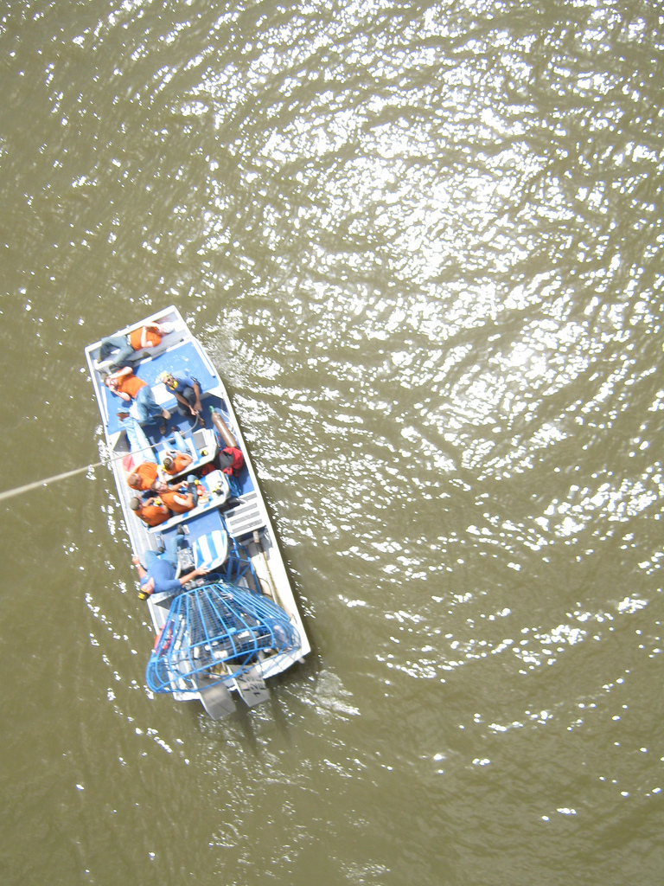

One of the most compelling aspects of the balloon and kite mapping techniques was its low cost; many of the communities I worked with, including those in Canta Gallo, Lima, and Rock Creek, West Virginia, mentioned cost in particular as a motivation to try these tools. For volunteers at the Louisiana Bucket Brigade in New Orleans, it was the low cost of a mapping kit which made it possible to scale up mapping efforts to several teams, with new maps made every few days, all within a budget of only a few thousand dollars. This made kite and balloon imaging techniques feasible at low cost even before the availability of digital cameras and image manipulation tools; today the development of higher-performance kites, lighter cameras, and open source mapping software has made it even more practical. In particular, the absence of engine noise makes both kite and balloon photography more appropriate than imaging from aircraft for sensitive environmental applications such as observing wildlife without disturbing it. [2] In my own work, this was useful while mapping the BP oil spill's affects on birds and other wildlife in the Gulf of Mexico. It has also proven relevant for politically and militarily sensitive areas such as coal mining sites in Appalachia, refugee camps in Palestine.
Image of birds on Chandeleur islands, and helicopter scaring them away.
Compared to the alternatives, of hiring pilots and paying for fuel and aircraft, or purchasing satellite imagery, balloon and kite mapping seemed not only inexpensive, but more legible and participatory. The idea that one would have to send a camera into space to photograph things which are right next to oneself seems strange, especially when the area of interest is on the scale of a small community. Imagery taken from only 2-4000 feet preserves a sense of the human scale; mappers can often see themselves or their boat or car in the images, and the occasional photograph shows the balloon or kite string leading down from the camera to the ground. This leaves a powerful impression on mappers, who are literally holding the camera in their hand at thousands of feet in the air... albeit at the end of a string. To them, the millimeter-thick string is both a literal and symbolic link to the camera, a reminder of their control over the image and the authorship they have in the resulting map.
| r0.5

|
In pragmatic terms, rather than relying on an outside source of expertise, members of participating communities felt that they could perform the image collection themselves, at times of their choosing, and could repeat the imaging at higher intervals than what would be possible with aircraft or satellites. After performing several 'trips' with members of the Louisiana Bucket Brigade and members of Coal River Mountain Watch, participants from those organizations felt comfortable launching their own balloons under observation by myself or Stewart Long, another grassroots cartographer. Several of these participants went on to lead their own trips and bring back their own imagery.
In parallel came the discovery that local people could readily interpret black and white aerial photographs, often at 1:5000 (Dewees 1989; Mearns 1989; Sandford 1989). [12]